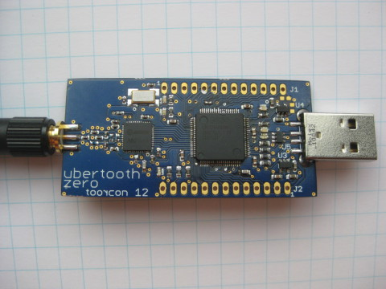

Ubertooth Zero
Ubertooth Zero was the first working prototype hardware platform of Project Ubertooth. It has been superseded by Ubertooth One.
architecture
- RP-SMA RF connector: connects to test equipment, antenna, or dummy load.
- CC2400 wireless transceiver IC.
- LPC175x ARM Cortex-M3 microcontroller with Full-Speed USB 2.0.
- USB A plug: connects to host computer running Kismet or other host code.
features
- 2.4 GHz transmit and receive.
- Transmit power and receive sensitivity comparable to a Class 3 Bluetooth device.
- non-standard JTAG connector.
- In-System Programming (ISP) serial connector.
- expansion connector: intended for inter-Ubertooth communication or other future uses.
- six indicator LEDs.
design
Ubertooth Zero was designed in CadSoft EAGLE with surface mount components suitable for reflow.
demonstration
Michael Ossmann presented Ubertooth Zero, a preview (video: part 1, part 2) at ToorCon 12 in October, 2010.